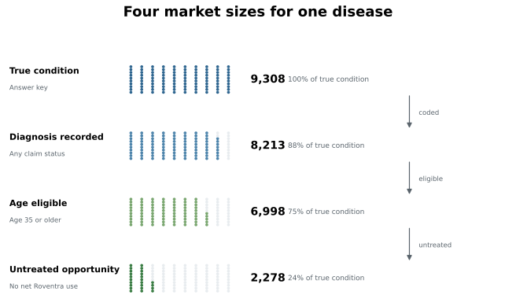
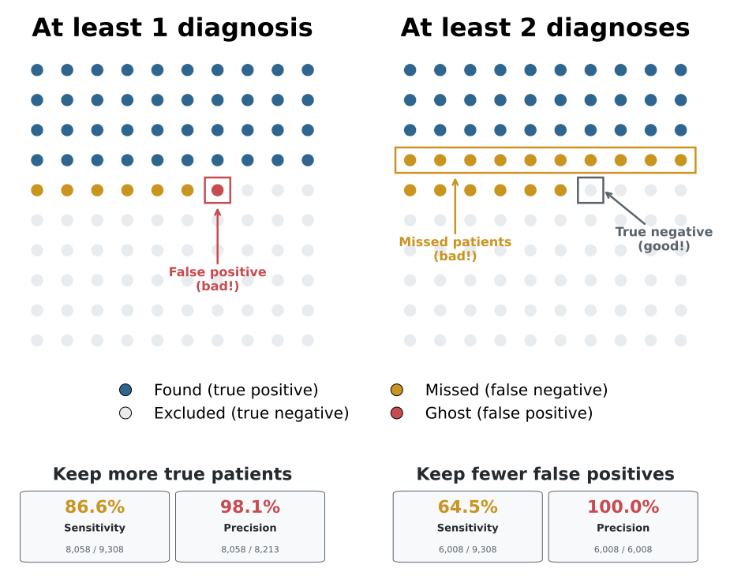
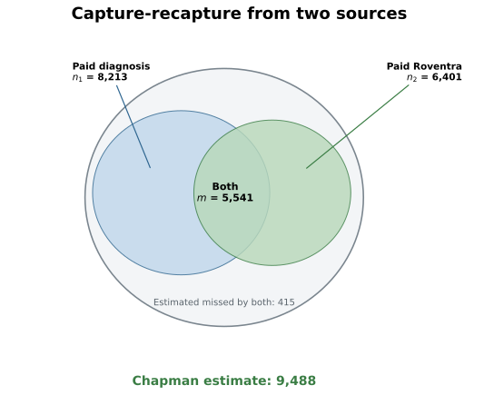

Chapter 4: Market Sizing and Patient Populations
Although market size estimation is important in pharmaceutical commercial analysis, numbers from epidemiology and from claims analytics often differ because they measure different populations. In this chapter, the same disease produces two useful numbers: a diagnosed population of 29 million and an untreated opportunity of 8 million. We will show where those numbers come from, why they differ, and how the gap informs decisions about label, access, and competitive position.
This chapter builds its calculations from the Chapter 3 synthetic package. It starts from a precise market definition, narrows the population step by step through calibrations, builds an opportunity funnel through diagnosis, eligibility, access, and starts, estimates the patients claims data never sees, and uses a patient-finding algorithm to rank the opportunity before turning it into commercial action.
Run the code blocks in order from the repository root, or open chapter4_walkthrough.ipynb to execute them as a notebook.
Note: The launch product is Roventra, a fictional once-daily oral medicine. Its competitors are Nexoral and Vexpro. The launch condition is modeled on Type 2 diabetes (ICD-10 codes E11.9, E11.65, E11.40). The age threshold, access probabilities, and conversion rate are scenario settings for this book's learning simulations. They are not a real product label or disease market. The
true_launch_conditioncolumn inpatients.csvis a synthetic reference field that records each patient's actual condition. It comes from the simulation and does not exist in real claims data. We use it only to validate the analysis results.
4.1 One Disease, One Medicine, Four Market Sizes
How many patients are in the market? The answer changes depending on whether you mean true disease, an ICD-code captured diagnosis, label eligibility, or treatment status. Each is a different market size question.
Label expansion can change who qualifies. In many cases, expanding an existing drug's label is more practical than developing a new molecule from scratch, because the product already has safety, manufacturing, and commercial history. FDA can later approve a new age band or a broader indication and turn a previously off-label population into an eligible one.
Listing 4.1: Build the patient analysis table
import pandas as pd
DATA = "ch03_data/output_data/generated_data"
LAUNCH_CODES = ["E11.9", "E11.65", "E11.40"] # the launch condition in ICD-10
PRODUCT = "Roventra"
patients = pd.read_csv(f"{DATA}/reference/patients.csv")
enroll = pd.read_csv(f"{DATA}/reference/patient_enrollments.csv")
patients = patients.merge(
enroll[["patient_id", "payer_id"]].drop_duplicates("patient_id"),
on="patient_id", how="left",
)
DX_COLS = [f"diagnosis_{i}" for i in range(1, 11)]
mc = pd.read_csv(f"{DATA}/claims_medical/medical_claims_mature.csv")
dx_mask = mc[DX_COLS].isin(LAUNCH_CODES).any(axis=1)
coded = mc[dx_mask]
paid_dx_count = coded.groupby("patient_id").size()
rx = pd.read_csv(f"{DATA}/claims_pharmacy/pharmacy_claims.csv",
dtype={"ndc": str, "ndc_prescribed": str})
ndc = pd.read_csv(f"{DATA}/reference/ndc_codes.csv", dtype={"ndc": str})
rx["drug_name"] = rx.ndc_prescribed.map(ndc.set_index("ndc").drug_name)
roventra = rx[rx.drug_name.eq(PRODUCT)].copy()
roventra["net"] = roventra.transaction_type.map({"PAID": 1, "REVERSED": -1}).fillna(0)
net_fills = roventra.groupby("patient_id").net.sum()
p = patients.copy()
p["true_condition"] = p["true_launch_condition"].fillna(False).astype(bool)
p["coded"] = p.patient_id.isin(coded.patient_id)
p["diagnosed"] = p.patient_id.map(paid_dx_count).fillna(0).ge(1)
p["diagnosed_2plus"] = p.patient_id.map(paid_dx_count).fillna(0).ge(2)
p["age_eligible"] = p.age_band.isin(["35-49", "50-64", "65+"])
p["treated"] = p.patient_id.map(net_fills).fillna(0).gt(0)
p["untreated"] = ~p.treated
In this code block, the drug name is derived by joining the NDC reference table. Now read the four market sizes off that table:
sizes = pd.DataFrame([
("True condition (answer key)", p.true_condition.sum()),
("Launch diagnosis coded", p.coded.sum()),
("Age-eligible diagnosed", (p.diagnosed & p.age_eligible).sum()),
("Untreated opportunity", (p.diagnosed & p.age_eligible & p.untreated).sum()),
], columns=["market_size", "patients"])
print(sizes.to_string(index=False))
market_size patients
True condition (answer key) 9308
Launch diagnosis coded 8213
Age-eligible diagnosed 6998
Untreated opportunity 2278
The four rows use the same disease but different filters. The first row uses a synthetic field that records the true condition. It does not exist in real claims data or a real patient table. Later in the chapter, we estimate the patients this field represents even when the diagnosis code never appears. The remaining rows apply the diagnosis, age, and treatment rules in order.
The last number, the untreated opportunity, is the eligible population minus the treated population:
eligible = p.diagnosed & p.age_eligible
print(f"age-eligible diagnosed: {eligible.sum()}")
print(f"treated within cohort: {(eligible & p.treated).sum()}")
print(f"untreated opportunity: {(eligible & p.untreated).sum()}")
age-eligible diagnosed: 6998
treated within cohort: 4720
untreated opportunity: 2278

Figure 4.1. Each row starts from the same 9,308 true-condition patients. Colored dots show the share retained as the market question becomes more specific. Synthetic data.
4.2 What Claims Can See and Miss
A disease can exist without appearing as a diagnosis in claims when it has not been found, documented, or coded yet. A diagnosis can also appear for the wrong patient or the wrong condition. The synthetic generator introduces both kinds of realistic errors, so you can measure the missed patients and the false positives. The 8,213 coded patients calculated in the previous section include false positives, so the true condition count is actually lower.
gates = pd.DataFrame([
("True condition (answer key)", p.true_condition.sum()),
("... coded with a launch diagnosis", (p.true_condition & p.coded).sum()),
("False positives (other condition, flagged)",(~p.true_condition & p.coded).sum()),
], columns=["gate", "patients"])
print(gates.to_string(index=False))
true_n = int(p.true_condition.sum())
print(f"\ncoded share: {100*(p.true_condition & p.coded).sum()/true_n:.1f}%")
gate patients
True condition (answer key) 9308
... coded with a launch diagnosis 8058
False positives (other condition, flagged) 155
coded share: 86.6%
In this claims data, 86.6% of true patients receive a launch code at least once. A separate 155 patients with another condition pick up a launch code and become false positives. One specific patient makes the first gap concrete:
invisible = p[p.true_condition & ~p.diagnosed & ~p.treated].sort_values("patient_id")
pid = invisible.iloc[0].patient_id
print("first invisible true patient:", pid)
print()
print("Patient table")
print(p.loc[p.patient_id.eq(pid)].to_string(index=False))
print()
print("Medical claims table")
print(mc.loc[mc.patient_id.eq(pid), ["claim_date"] + DX_COLS[:3]].to_string(index=False))
print()
print("Rx table")
rx_view = rx.loc[rx.patient_id.eq(pid), ["date_of_service", "drug_name", "transaction_type", "reject_code"]].copy()
rx_view["reject_code"] = rx_view["reject_code"].apply(
lambda x: "" if pd.isna(x) else f"{int(x)}" if float(x).is_integer() else f"{x}"
)
print(rx_view.to_string(index=False))
first invisible true patient: PAT00046
Patient table
patient_id state region age_band sex true_launch_condition
PAT00046 NY Northeast 18-34 F True
Medical claims table
claim_date diagnosis_1 diagnosis_2 diagnosis_3
2024-06-28 F41.9 J45.909 E78.5
Rx table
date_of_service drug_name transaction_type reject_code
2024-06-09 Vexpro PENDED 70
2024-06-13 Vexpro PAID
2024-07-06 Vexpro PAID
PAT00046 truly has the launch condition, but the medical claim only codes anxiety, asthma, and dyslipidemia. The pharmacy record shows 2 paid Vexpro fills. This is a patient treated on a competitor, invisible to a diagnosis-based filter. PAT00046 returns in Section 4.5, where we estimate how many patients like this exist, and again in Section 4.6, where a machine learning model finds and ranks patients like this for review.
4.3 How Much Evidence to Require? One Diagnosis or Two?
A decision rule turns claims records into a patient condition flag. The choice here is whether to require one diagnosis or at least two.
Listing 4.2: Score two claims rules against the true condition
def diagnostics(flag, truth):
tp = int((flag & truth).sum())
fp = int((flag & ~truth).sum())
fn = int((~flag & truth).sum())
return dict(TP=tp, FP=fp, FN=fn,
sensitivity_pct=round(100 * tp / (tp + fn), 1),
precision_pct=round(100 * tp / (tp + fp), 1),
)
diag = pd.DataFrame([
{"rule": "1+ paid diagnosis", **diagnostics(p.diagnosed, p.true_condition)},
{"rule": "2+ paid diagnoses", **diagnostics(p.diagnosed_2plus, p.true_condition)},
])
print(diag.to_string(index=False))
print(f"\nstrict rule correctly rejected {int((p.diagnosed & ~p.true_condition).sum())} false positive patients.")
print(f"at the cost of missed {int((p.diagnosed & p.true_condition).sum() - (p.diagnosed_2plus & p.true_condition).sum())} true patients.")
rule TP FP FN sensitivity_pct precision_pct
1+ paid diagnosis 8058 155 1250 86.6 98.1
2+ paid diagnoses 6008 0 3300 64.5 100.0
strict rule correctly rejected 155 false positive patients.
at the cost of missed 2050 true patients.
The one-diagnosis rule finds 86.6% of true patients (sensitivity, or recall, or True Positive Rate) and keeps 98.1% of flagged patients correct (precision, or positive predictive value, PPV). Requiring at least two diagnoses removes all 155 false positive patients, but it also drops 2,050 true patients. Use one diagnosis when you want more coverage and broader capture. Use two diagnoses when you want a smaller, cleaner list and can accept missing more true patients.

Figure 4.3. Requiring at least two diagnoses removes the 155 false positives but misses 2,050 true patients. Synthetic data.
The stricter rule reaches 100% precision here because every false positive patient has only 1 launch diagnosis, so the two-diagnosis rule removes them all. That is a property of this synthetic file, not a general rule for real claims data. In a real file, some false positives would still carry 2 or more diagnoses, so the strict rule would miss fewer false positives but also lose more true patients. Real data are messier.
4.4 Anchor the Denominator and Build the Opportunity Funnel
The claims data contains 8,213 diagnosed patients, 41.1% of the 20,000-patient panel. For national scale, an external prevalence anchors are 11.3% diagnosed diabetes prevalence in NCHS Data Brief 516 and 258,554,106 U.S. adults age 20 and older from the 2024 Census adult population. The panel over-represent the population, because claims mainly have treated patients who are already receiving medical care.
US_ADULTS = 258_554_106 # 2024 Census resident population age 20+
PREVALENCE = 0.113 # NCHS Data Brief 516: diagnosed diabetes, adults 20+
panel_share = p.diagnosed.mean()
print(f"panel diagnosis share: {panel_share:.1%} ({p.diagnosed.sum()} of {len(p)})")
print(f"diagnosed diabetes rate: {PREVALENCE:.1%}")
print(f"US adults age 20+: {US_ADULTS:,.0f}")
print(f"external prevalence anchor: {US_ADULTS:,.0f} * {PREVALENCE:.1%} = {PREVALENCE * US_ADULTS:,.0f}")
panel diagnosis share: 41.1% (8213 of 20000)
diagnosed diabetes rate: 11.3%
US adults age 20+: 258,554,106
external prevalence anchor: 258,554,106 * 11.3% = 29,216,614
Let's inspect the access rule in market_access_rules.csv on December 31, 2024.
Listing 4.3: Inspect the active access rules
access = pd.read_csv(f"{DATA}/market_access/market_access_rules.csv",
parse_dates=["effective_start", "effective_end"])
ANALYSIS_DATE = pd.Timestamp("2024-12-31")
rules = access[access.product_name.eq(PRODUCT)
& access.effective_start.le(ANALYSIS_DATE)
& access.effective_end.ge(ANALYSIS_DATE)]
preview = (access[access.effective_start.le(ANALYSIS_DATE)
& access.effective_end.ge(ANALYSIS_DATE)]
[["payer_id", "region", "product_name", "coverage_status"]]
.drop_duplicates()
.sort_values(["coverage_status", "product_name", "payer_id", "region"])
.drop_duplicates("coverage_status")
[["payer_id", "region", "product_name", "coverage_status"]])
print(preview.to_string(index=False))
payer_id region product_name coverage_status
PAY002 Midwest Vexpro Covered
PAY003 Midwest Nexoral Covered with PA
PAY002 Midwest Nexoral Covered with Step Edit
PAY001 Midwest Nexoral Non-covered
Covered means the payer covers Roventra without extra approval. Most of those patients are reachable, but not all. A claim can still reject for administrative reasons, and some patients will not fill even when coverage exists. We assign 90% probability to this category.
Covered with Step Edit means the plan requires an extra formulary step before approval for the requested drug. We assign 75% probability to this category.
Covered with PA means the plan requires prior authorization. That usually adds friction, so we assign 65% probability to this category.
Non-covered means the plan does not cover it as a standard benefit. A few patients still get through by exception, appeals, cash pay, coupons, or alternate channels, but that is much harder. That is why the probability is set to 10%.
ACCESS_PROBABILITY = {
"Covered": 0.90,
"Covered with Step Edit": 0.75,
"Covered with PA": 0.65,
"Non-covered": 0.10,
}
Attach each patient's probability from the access rule, then build the funnel. If a patient is not matched to a rule, their access probability is 0.
Listing 4.4: Assemble the nationally anchored opportunity funnel
p = p.merge(rules[["payer_id", "region", "coverage_status"]],
on=["payer_id", "region"], how="left")
p["access_probability"] = p.coverage_status.map(ACCESS_PROBABILITY).fillna(0.0)
elig = p.diagnosed & p.age_eligible
untr = elig & p.untreated
diagnosed_pop = PREVALENCE * US_ADULTS
age_eligible_rate = elig.sum() / p.diagnosed.sum()
untreated_rate = untr.sum() / elig.sum()
reachable_rate = p.loc[untr, "access_probability"].mean()
age_pop = diagnosed_pop * age_eligible_rate
untreated_pop = age_pop * untreated_rate
reachable = untreated_pop * reachable_rate
expected_starts = reachable * 0.25
funnel = pd.DataFrame([
("Diagnosed population", diagnosed_pop),
("Age eligible", age_pop),
("Untreated opportunity", untreated_pop),
("Reachable (access-adjusted)", reachable),
("Expected starts (25% assumed)", expected_starts),
], columns=["stage", "population"])
funnel["population"] = funnel["population"].map(lambda v: f"{v:,.0f}")
print(funnel.to_string(index=False))
stage population
Diagnosed population 29,216,614
Age eligible 24,894,419
Untreated opportunity 8,103,671
Reachable (access-adjusted) 4,188,972
Expected starts (25% assumed) 1,047,243

Figure 4.5. The first three stages are calculated counts from the panel and national anchors. The last two are based on access and conversion assumptions. Synthetic analysis with public anchors.
The age rule keeps 6,998 of 8,213 diagnosed panel patients, which scales to 24.9 million. Treatment then keeps the untreated share, measured from the panel: 2,278 of 6,998, or 32.6%, are untreated, producing 8.1 million. Access works differently. It multiplies each untreated patient by a coverage probability, so no patient is removed. The same 8.1 million stays in play, and the access-adjusted reachable total drops to 4.2 million. The final 25% conversion is a scenario assumption for how many reachable patients actually start treatment, giving 1.0 million expected starts.
4.5 Estimate the Unobserved Population
PAT00046 is invisible because no claim records her launch diagnosis code. How many patients like this exist? Capture-recapture, also called mark-recapture, estimates that by comparing the overlap between two imperfect sources.
The method began in ecology. A researcher captures a group of animals, marks them, and releases them back into the population. Later, the researcher captures a second group and counts how many of those animals were marked before. If many marked animals show up again, the population is probably smaller. If few do, the population is probably larger. The same logic works in disease registers and claims data. Instead of paint or tags, we use patient identifiers. We count patients who appear in both sources.
Let \(n_1\) be the number of patients in the medical record diagnosis source, \(n_2\) the number in the Roventra fill source, and \(m\) the number in both. The Chapman estimator is $$ \hat{N} = \frac{(n_1+1)(n_2+1)}{m+1} - 1 $$ It adds one to each count before dividing, which reduces the small-sample bias in the raw Lincoln-Petersen estimator \(\hat{N} = \frac{n_1 n_2}{m}\).
For confidence intervals, the Chapman form provides the following variance estimate:
The confidence interval uses a log scale: \(\text{CI} = \left[ (n_2 + n_1 - m - 0.5) + \frac{(n_2 - m + 0.5)(n_1 - m + 0.5)}{m + 0.5} e^{\pm z\sigma} \right]\)
Listing 4.5: Two-source capture-recapture for the launch condition
import math
def chapman(source_a, source_b):
n1, n2 = len(source_a), len(source_b)
m = len(source_a & source_b)
n_hat = (n1 + 1) * (n2 + 1) / (m + 1) - 1
z = 1.96
sigma = ((1 / (m + 0.5))
+ (1 / (n2 - m + 0.5))
+ (1 / (n1 - m + 0.5))
+ ((m + 0.5) / ((n1 - m + 0.5) * (n2 - m + 0.5)))) ** 0.5
base = n2 + n1 - m - 0.5
scale = ((n2 - m + 0.5) * (n1 - m + 0.5)) / (m + 0.5)
ci_low = base + scale * math.exp(-z * sigma)
ci_high = base + scale * math.exp(z * sigma)
return n1, n2, m, n_hat, ci_low, ci_high
paid_dx = set(coded.patient_id)
paid_rx = rx[rx.transaction_type.eq("PAID")]
source_b = set(paid_rx[paid_rx.drug_name.eq(PRODUCT)].patient_id)
n1, n2, m, n_hat, ci_low, ci_high = chapman(paid_dx, source_b)
print(f"n1={n1} n2={n2} m={m}")
print(f"Chapman={n_hat:,.0f} CI=[{int(ci_low):,}, {int(ci_high):,}]")
n1=8213 n2=6401 m=5541
Chapman=9,488 CI=[9,438, 9,543]

Figure 4.6. The overlap between two sources estimates how many patients both miss. Synthetic data.
The estimate is 9,488. Compared with the true 9,308 in this synthetic file, that is 1.9% high, or 180 patients above the true launch condition population size. The method strongly assumes the chance of being observed should be similar across individuals in the population. In real data, sicker patients are more likely to appear in both medical and pharmacy records, which pushes the estimate downward.
4.6 Patient Finding: From Count to List
Capture-recapture says about 415 launch-condition patients sit outside both clean sources. We use that estimate to train a patient-finding model and turn the hidden count into a ranked list.
In this example, a gradient boosting model is trained on patients whose diagnosis is already known, then used to score the patients whose diagnosis is not coded. The outcome is the confirmed condition. The features include medical activity, competitor and support drug fills, lab results such as A1C values, and demographics. A patient on a competitor drug with a high A1C and no coded diagnosis is the kind of record the model should rank highly.
Listing 4.6: Rank undiagnosed patients by probability of the true condition
from sklearn.ensemble import GradientBoostingClassifier
from sklearn.model_selection import train_test_split
from sklearn.metrics import roc_auc_score
lab = pd.read_csv(f"{DATA}/claims_lab/lab_results.csv")
a1c = lab[lab.test_name.eq("Hemoglobin A1c")]
diabetes_rx_patients = rx[
rx.diagnosis_code.str.startswith("E11", na=False)
& rx.transaction_type.eq("PAID")
].patient_id
f = p[["patient_id", "age_band", "region", "sex", "diagnosed", "true_condition"]].copy()
f["n_class_fills"] = f.patient_id.map(
paid_rx[paid_rx.drug_name.isin([PRODUCT, "Nexoral", "Vexpro"])].groupby("patient_id").size()
).fillna(0)
f["max_a1c"] = f.patient_id.map(a1c.groupby("patient_id")["result"].max()).fillna(0)
f["has_elevated_a1c"] = (f.max_a1c >= 6.5).astype(int)
f["diabetes_rx_proxy"] = f.patient_id.isin(diabetes_rx_patients).astype(int)
X = pd.get_dummies(f.drop(columns=["patient_id", "diagnosed", "true_condition"]),
columns=["age_band", "region", "sex"])
Xtr, Xte, ytr, yte = train_test_split(X, f.diagnosed.astype(int),
test_size=0.3, random_state=20260613, stratify=f.diagnosed)
clf = GradientBoostingClassifier(random_state=20260613).fit(Xtr, ytr)
f["score"] = clf.predict_proba(X)[:, 1]
print("held-out AUC (predicting the confirmed condition):",
round(roc_auc_score(yte, clf.predict_proba(Xte)[:, 1]), 3))
held-out AUC (predicting the confirmed condition): 0.93
On the test split, the model separates diagnosed patients from undiagnosed ones at 0.93 AUC because the medical evidence, utilization, competitor fills, and labs carry a real signal. AUC means area under the ROC curve. A score of 0.93 is a strong score, while random guessing is 0.50. Now we point the model at the undiagnosed patients and check the top of the list against the true conditions:
undx = f[f.diagnosed.eq(0)].sort_values("score", ascending=False)
base = undx.true_condition.mean()
print(f"undiagnosed patients: {len(undx):,}")
print(f"truly positive among them: {int(undx.true_condition.sum()):,} ({100*base:.1f}%)")
for frac in (0.10, 0.20):
top = undx.head(int(len(undx) * frac))
print(f"top {int(frac*100):>2}%: {int(top.true_condition.sum()):,} true "
f"({100*top.true_condition.mean():.1f}%), lift {top.true_condition.mean()/base:.1f}x")
print("PAT00046 percentile among undiagnosed:",
round(100 * (undx.score < undx.set_index('patient_id').loc['PAT00046', 'score']).mean(), 1))
undiagnosed patients: 11,787
truly positive among them: 1,250 (10.6%)
top 10%: 1,177 true (99.9%), lift 9.4x
top 20%: 1,209 true (51.3%), lift 4.8x
PAT00046 percentile among undiagnosed: 94.4
Among 11,787 undiagnosed patients, 10.6% truly have the condition. The model's top decile is 99.9% true, a 9.4-fold lift, and PAT00046 lands at the 94.4th percentile. With the ranked list, the team can start with the highest-scored decile instead of reviewing all 11,787 undiagnosed patients to find 1,250 true cases. This same approach is common in rare-disease and under-diagnosis programs. Appendix 4A covers the production extensions: sequence models over claim histories, NLP on clinical notes, and related methods.
Note: The synthetic generator plants these signals. Launch-condition patients are more likely to have elevated A1C results, launch-diagnosis coding, and Roventra or competitor fills, while age, region, and sex are only background features. That is why the model can rank the undiagnosed patients well in this teaching file.
4.7 From a Scored List to a Commercial Action
The patient finder now produces a scored list, but the list itself cannot go straight into commercial action. The patient IDs are tokenized, so the brand does not get direct patient identities.
The ranked list can still support two commercial uses. The first is an HCP target list for field action. The second is a clean-room audience seed for privacy-preserving matching.
The HCP target list names physicians, accounts, territories, and the number of high-scoring undiagnosed patients linked to each physician. A field rep can use it to rank accounts, decide where to spend time next, and prepare a call plan with the local account team. It gives the rep a short list of providers tied to the largest concentration of high-scoring patients.
Listing 4.7: Produce the HCP targeting output
hcp_targets = pd.read_csv(f"{DATA}/reference/hcp_targets.csv")
provider_events = pd.concat([
mc[["patient_id", "rendering_npi"]].rename(columns={"rendering_npi": "npi"}),
rx[["patient_id", "prescriber_npi"]].rename(columns={"prescriber_npi": "npi"}),
], ignore_index=True).dropna()
top_decile = undx.head(int(len(undx) * 0.10))[["patient_id", "score"]]
hcp_output = (provider_events.merge(top_decile, on="patient_id")
.merge(hcp_targets, on="npi", how="inner")
.groupby(["npi", "account_id", "territory", "state", "specialty_1"])
.agg(high_score_patients=("patient_id", "nunique"),
mean_score=("score", "mean"))
.reset_index()
.sort_values(["high_score_patients", "mean_score", "npi"],
ascending=[False, False, True])
.head(10))
hcp_output["mean_score"] = hcp_output.mean_score.map(lambda v: f"{v:.3f}")
print(hcp_output[["npi", "specialty_1", "territory", "state",
"high_score_patients", "mean_score", "account_id"]].to_string(index=False))
npi specialty_1 territory state high_score_patients mean_score account_id
9000000249 Oncology T04 FL 9 0.879 ACC147
9000000617 Primary Care T02 PA 8 0.867 ACC169
9000000026 Endocrinology T03 WA 8 0.855 ACC226
9000000506 Oncology T05 IL 8 0.852 ACC172
9000000640 Primary Care T06 FL 6 0.879 ACC005
9000000160 Cardiology T08 TX 6 0.876 ACC207
9000000616 Oncology T07 CA 6 0.867 ACC046
9000000665 Oncology T06 NJ 6 0.850 ACC085
9000000469 Endocrinology T02 IL 6 0.846 ACC121
9000000520 Primary Care T07 FL 5 0.889 ACC110
Note: Due to the synthetic limitation, the provider specialties were assigned independently of the patient condition. The HCP list is built by rolling the scored patients up to the linked providers and accounts, so specialties like oncology and cardiology can appear even though the launch condition is diabetes.
The secondary path is direct-to-consumer (DTC) advertising through privacy-preserving audience matching. Token exchange vendors such as Datavant and HealthVerity can bridge tokenized patient records to digital advertising IDs through HIPAA-compliant clean rooms. The high-scoring patients become a seed audience. The brand pays to reach people statistically similar to that audience on approved channels, without ever identifying individuals. This track runs in parallel to HCP promotion and is most effective for conditions where patients seek diagnosis themselves once they recognize their symptoms.
Note: In practice, full DTC prescription-drug advertising is allowed in the U.S. and New Zealand, while most other countries ban it or allow only limited forms.
Listing 4.8: Produce the audience matching seed
audience_seed = undx.head(10)[[
"patient_id", "score", "age_band", "region", "sex",
"n_class_fills", "max_a1c", "diabetes_rx_proxy",
]].copy()
audience_seed["score"] = audience_seed.score.map(lambda v: f"{v:.3f}")
audience_seed["max_a1c"] = audience_seed.max_a1c.map(lambda v: f"{v:.1f}")
print(audience_seed.to_string(index=False))
patient_id score age_band region sex n_class_fills max_a1c diabetes_rx_proxy
PAT19069 0.980 50-64 Northeast F 3 11.6 1
PAT06732 0.960 65+ Northeast M 1 11.2 1
PAT13709 0.944 50-64 South F 5 11.4 1
PAT11493 0.937 35-49 South F 2 10.5 1
PAT14943 0.926 18-34 Midwest M 1 11.2 1
PAT12161 0.924 35-49 Midwest F 5 10.5 1
PAT05955 0.924 50-64 South F 0 10.4 1
PAT19399 0.922 18-34 South F 2 8.0 1
PAT04869 0.921 18-34 South F 3 10.1 1
PAT06198 0.919 35-49 South F 1 11.4 1
4.8 The Market-Sizing Question is Answered
The table below collects the numbers the chapter has already built and shows where each one comes from.
Table 4.3. The final market-sizing bridge.
| Stage | Estimate | Main input | Lever |
|---|---|---|---|
| Diagnosed population | 29,216,614 | External prevalence and Census | Diagnosis programs |
| Age eligible | 24,894,419 | Age rule | Label and indication |
| Untreated opportunity | 8,103,671 | Net Roventra treatment state | Competitive share |
| Reachable opportunity | 4,188,972 | Assumed access probabilities | Payer access |
| Expected starts | 1,047,243 | Assumed 25% conversion scenario | Conversion and field |
The 29 million estimate is the anchored diagnosed population. The 8.1 million estimate is the diagnosed, age-eligible, untreated population. The 4.2 million reachable estimate applies the access rules to that untreated group, and the 1.0 million starts figure applies the conversion assumption on top of that. PAT00046 sits outside the coded and treated rows: a patient the diagnosis-based filter misses, counted by capture-recapture as part of the unseen group and ranked by the patient-finding model.
4.9 Summary
The chapter started with two market size numbers, then anchored the market to an external prevalence source and moved through diagnosis, age eligibility, untreated opportunity, access, and starts. Capture-recapture handled the patients both sources miss. Patient finding turned that count into a ranked list, and the final step turned the same list into two commercial outputs: audience matching and HCP targeting.
4.10 Exercises
Each exercise is solvable with the package you generated and a dozen lines of pandas or scikit-learn.
- Pick an index date. The chapter's funnel counts everyone diagnosed during 2024, a prevalent cohort. A new-start analysis counts only patients whose first paid launch diagnosis falls in a chosen window. Restrict the diagnosed cohort to patients whose first paid launch diagnosis is in the second half of 2024, recompute the untreated count, and state which commercial question the prevalent cohort answers and which the incident cohort answers. (Hint: index-date choice is the foundation of the line-of-therapy logic in Chapter 5, and the two cohorts need different external anchors.)
- Change the access date. Build an access rule that changes midyear for one payer, then compare the reachable estimate immediately before and after the effective date using the as-of-date join from Listing 4.3. State whether the estimand, the estimator, or both changed. (Hint: the honest answer previews Chapter 6.)
- Break patient finding on purpose. Retrain the Listing 4.6 model but add a feature that leaks the launch diagnosis (for example, the launch code count). Show what happens to the held-out AUC and to the top-decile precision among undiagnosed patients, and explain why a model that looks better in validation would find nobody new in production. (Hint: leakage rehearses the bias thinking of Chapter 11.)
Two companion notebooks ship with the chapter: chapter4_walkthrough.ipynb replays the whole chapter as one executable story, and exercise_solutions.ipynb works the three exercises with discussion. Advanced and emerging methods for market sizing and patient finding are collected in Appendix 4A.
Chapter 5 follows the untreated patients into their treatment journeys: what they start, switch, stop, and restart.